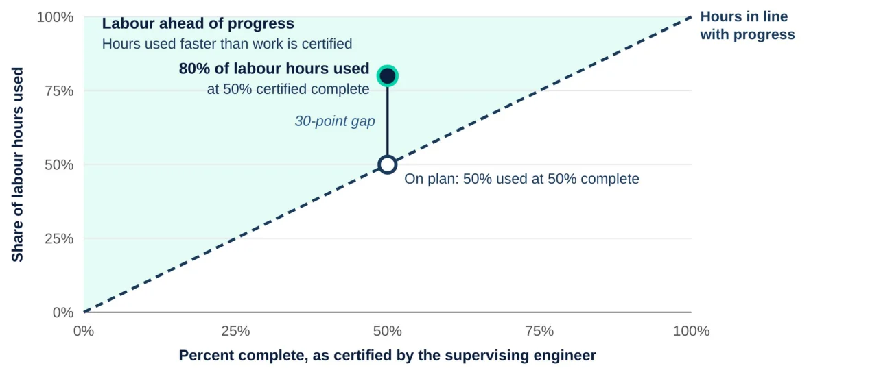
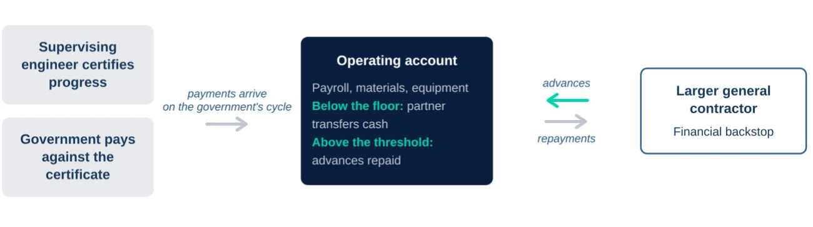

In 2011, I acquired a territorial license for construction technology, brought it to Saudi Arabia, and built a demonstration factory (more on that in another case study). While promoting the system to general contractors in Riyadh, I met a fellow Canadian who was growing his contracting company. We recognized the complementary nature of our skills and experiences. He was an engineer and knew design, bidding, and project management. He respected the value of my operations and finance experience, and in 2013 we formed a partnership.
When I joined, we had approximately 200 employees. Over the next three years, we scaled the company to 1,200, including more than 100 engineers managing 26 job sites. In 2015, we sold the company.
- 1,200+employees, up from 200
- 3years
- 26active job sites
- 100+engineers supervising about 1,000 tradesmen
Consistent with government tenders in most countries, Saudi Arabia awards contracts to the lowest qualified bidder, and these are the most coveted. This means lots of competition and tight margins.
Before I get into the challenges and lessons learned from scaling a company 6x in three years, I want to set the stage, as the structure of the construction industry in Saudi Arabia is vastly different from that in North America. That difference stems from two factors. In North America, general contractors are essentially management companies because they bid on projects and subcontract work out to specialist companies that hire the staff and perform the work. GCs can do this because subcontractors are readily available and cover every field of trade or service a project requires. That breadth of economy doesn’t exist across the Gulf states, and the SME market is significantly smaller. For example, Canada and Saudi Arabia have roughly the same population, but Canada’s economy is 2.4 times Saudi Arabia’s excluding oil production, using 2024 GDP figures.
The second difference is that no skilled tradespeople are available locally. They come from other countries, primarily India, Pakistan, Bangladesh, and Nepal. A 2022 Kenyan Senate report cited 600,000 Pakistanis working in Saudi Arabia.1
So what does this mean for general contractors in the Gulf? They are the employer.
Exhibit 1
Who carries the workforce?

The Challenges of Scaling
Scaling a general contractor in Saudi Arabia presents several challenges unique to the region:
- Since no skilled tradesmen were available to be hired locally, they all had to come from other countries. This sets up a host of related issues:
- Recruitment: We used recruitment agencies in each country. Each agency kept a pool of tradesmen who had already shown agency staff they could do the work. Workers had to prove they could do the job they were being hired for. Higher-skilled trades, such as electricians, also had to show their qualifications.
- Visas: Every hire needed a visa, and several people in HR worked on nothing else. Saudization rules required that 10% of staff be Saudi nationals, which we treated as a fixed cost of operating in the market. Our Saudi colleagues handled our dealings with government offices.
- Housing: Every recruit had to be housed, which meant leasing a lot of labor accommodations (more on that in another case study). Since they came from different countries, they were grouped by nationality.
- Food: Every day, three times per day, about 1,000 people had to be fed, with food according to the tastes, customs, and preferences of their home country.
- Transportation: We ran up to 26 jobs, and every morning we had to move everyone to the right location and bring them back again. This meant a fleet of buses and dealing with drivers, insurance, gas, repairs, and breakdowns.
- Tools: When tradespeople show up to a job site in North America, they arrive with the tools they need to do the job. Not in Saudi Arabia. The GC has to provide the necessary tools.
- Communications: The majority of the site engineers responsible for the execution of the works were from Arabic-speaking countries, such as Jordan, Egypt, and Syria. The workers were from none of those countries. This, as you can imagine, sets up a serious communication gap. We resolved this by organizing each crew by nationality and assigning a supervisor who spoke the crew’s language and enough Arabic to take direction from the engineers.
- Supervising Engineers: When the government awards a contract, at the same time an engineering firm is hired to supervise the work of the contractor. They are the ones who decide on the percentage of completion and release of progress payments. This required our engineers to build good relationships with the supervising engineer.
- Government Regulations and Compliance: This is a whole department, which was managed by our Saudi nationals, because of the volume of regulations, forms, and approvals that were needed.
- Inconsistent Timing of Payments: General contractors often faced delays in payment, even when approved by the supervising engineer, which strained working capital.
How were these complexities managed? We broke them into manageable pieces:
Data
Data capture was critical. Every site reported its labor hours and materials usage. For labor, we compared two measures: the percentage of budgeted hours used and the supervising engineer’s certified percentage of completion. If a site had used 80% of its budgeted labor hours but was only 50% complete, we had a problem. Recovering that lost productivity without overtime and further costs was rare.
Exhibit 2
Labor hours running ahead of progress are the warning sign


At the start of a project, we shipped materials to the sites so we had stock on hand. For example, we kept steel rebar in stock. As the stock ran down, the site engineer asked for more. Every purchase went through a finance manager, who checked it against the budget and against how far along the project was. Crews kept working from the stock on site while each order was approved.
Materials expenses would typically show a much higher budget-to-percentage-of-completion ratio because of initial inventories, but those numbers dropped as the project progressed and inventories declined.
Our own quantity surveyors also measured progress on every site. They reported to the head of construction, separate from the site engineers whose work they were measuring. They got to know the supervising engineers and worked out most differences with them. When a difference remained, we went with the supervising engineer’s figure, because that was the figure that got us paid.
Systems
The systems that captured the data played an integral role as we scaled the company. I had to ensure that:
- we bought the right systems;
- we paid the right price;
- the systems were installed and operating to spec;
- our team was trained and knew how to use them properly;
- the systems supported compliance with Saudi regulations (GOSI, visas, Saudization percentages);
- the systems managed HR functions (onboarding, training, employee contracts); and
- the systems provided site reporting and financial controls.
Cash Management
Cash flow was the biggest challenge. The government was notoriously inconsistent in making payments.
Every new project needs money up front. You set up trailers, order equipment and train the team on the project plan, and none of it counts toward the percent of completion. The advance payments were rarely enough to cover it. Holdbacks were part of every contract, and with thin margins, a significant portion of the profits came well after the project finished. For example, if a project had a holdback of 10% of contract revenue and an expected profit margin of 20%, cash equivalent to half our expected profit remained withheld until the supervising engineer confirmed that the contract conditions had been met and the holdback period had elapsed.
High growth meant high working capital requirements.
With 26 sites and 1,200 people, payroll, materials, and equipment were due every month whether the government had paid or not. I managed the working capital facility with a much larger general contractor. When our account dropped below an agreed level, they sent cash. When government payments brought it above an agreed level, we paid them back. That facility let us keep winning projects while waiting to be paid on the ones we had.
Exhibit 3
How the working capital facility worked


The outcome
The company was sold to a large contractor in 2015.
Running the Gauntlet is Tressling’s process for transforming, capitalizing, and scaling companies. Its six stages guide the work from recognizing the need for change to building a business that can grow at scale and realizing its value. This case study illustrates how Step 5: Scale was put into practice.
Running the gauntlet
- 1Recognize the need to transform
- 2Build a financeable strategy
- 3Execute
- 4Prove it works
- 5ScaleThis case study
- 6Realize the value
Sources

About the author
Since founding Tressling in 2003, Dan McLaughlin has been an operator, investor, and advisor. As an owner-operator, he has scaled businesses in construction, real estate, and manufacturing. As Chief Investment Officer of SASCO Global Investments, he led investment decisions for a US$400 million fund, and as an advisor, he has structured more than US$1 billion in debt and equity financings. He also held senior roles in restructuring at PwC and in international finance and restructuring at Bombardier Aerospace.
This case study is for information only and is not investment, legal or tax advice.